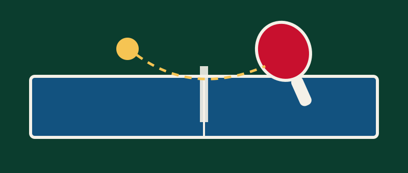
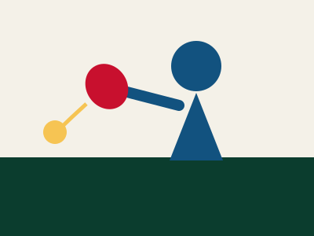
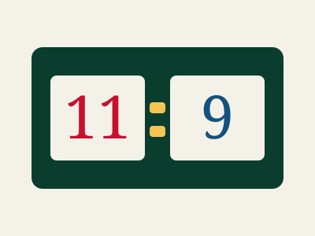

The Fastest Racket Sport in the World
Table tennis, also called ping-pong, is played on a 2.74 m table split by a 15.25 cm net. A 40 mm celluloid-free ball can leave the paddle at more than 100 km/h and spin at over 9,000 revolutions per minute, so every rally is decided in fractions of a second.
The sport became an Olympic event in 1988 and is now played by an estimated 300 million people. Because the equipment is inexpensive and the court is small, a club can be set up in a garage, a school hall or an office break room.
- Table size: 2.74 m × 1.525 m
- Table height: 76 cm
- Net height: 15.25 cm
- Ball diameter: 40 mm
- Ball weight: 2.7 g
- Games are played to 11 points
Photo Gallery
Five moments that show what a rally actually looks like.





Why Play?
Sharper Reflexes
Reaction windows of roughly 0.25 seconds train the eyes and hands together better than almost any other sport.
Low Impact Cardio
A one hour session burns 250–350 calories while putting very little strain on the knees and ankles.
Lifelong Game
Players compete from age six into their eighties, and doubles makes the game social as well as competitive.
Where to Next?
Choose a paddle and a ball on the Equipment page, then learn how points are won on the Rules page.